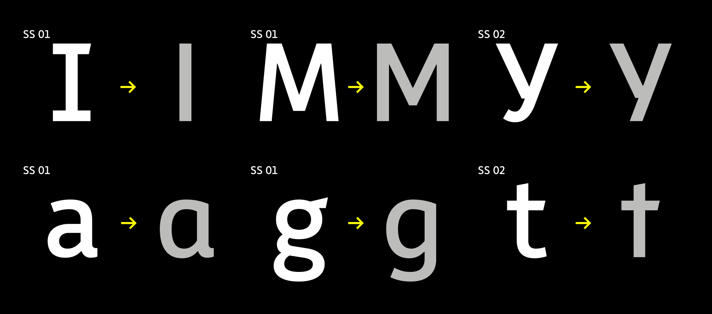
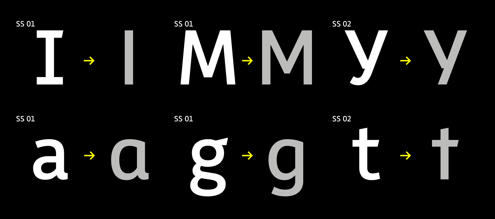
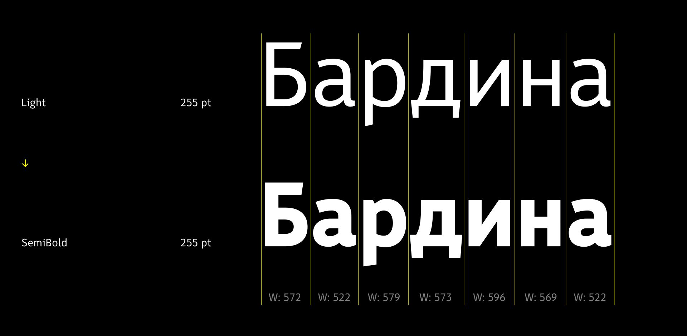
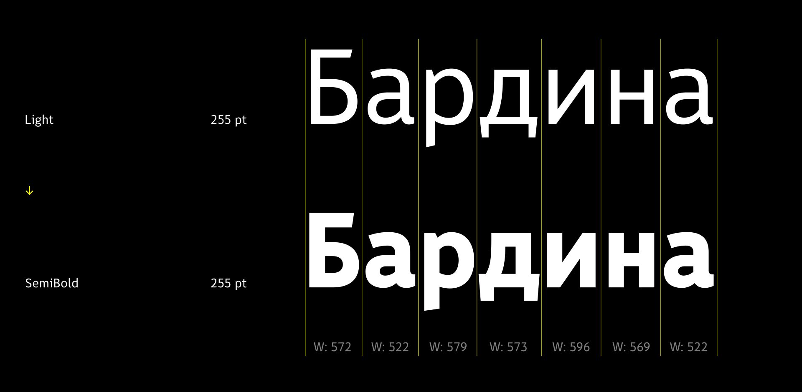
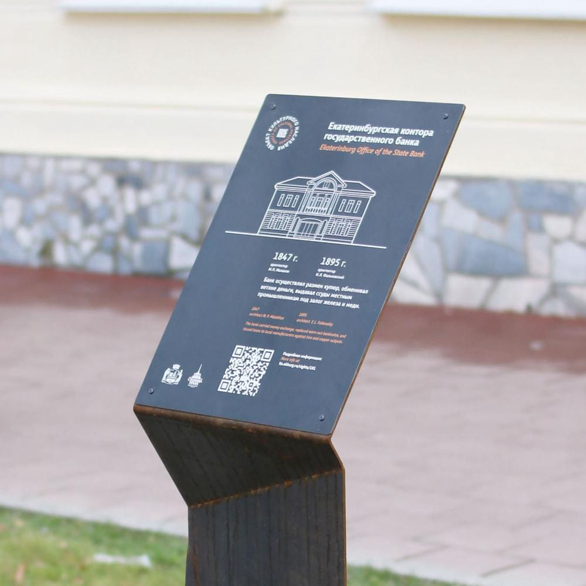
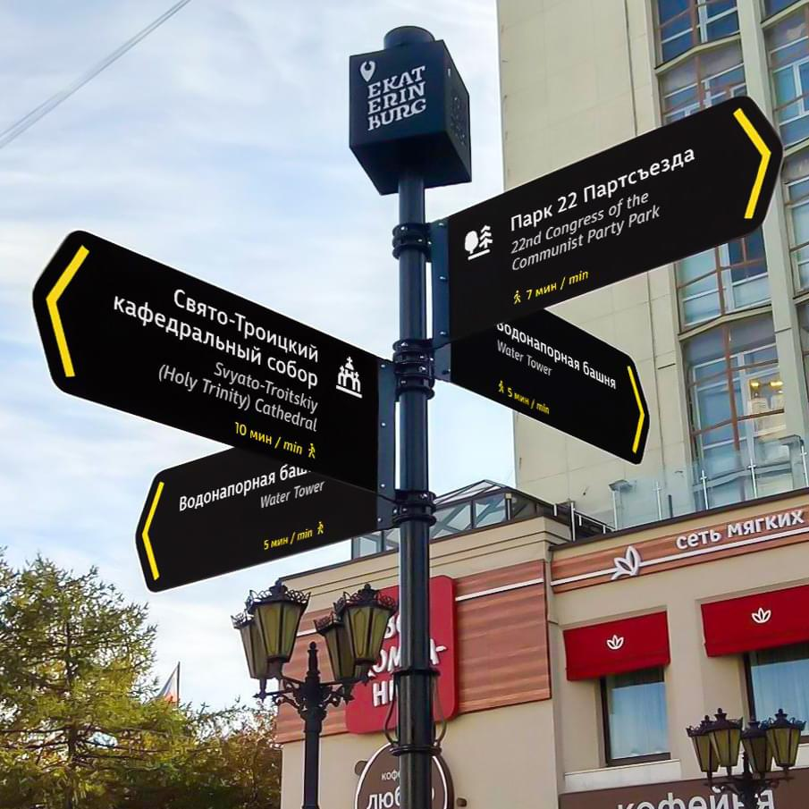
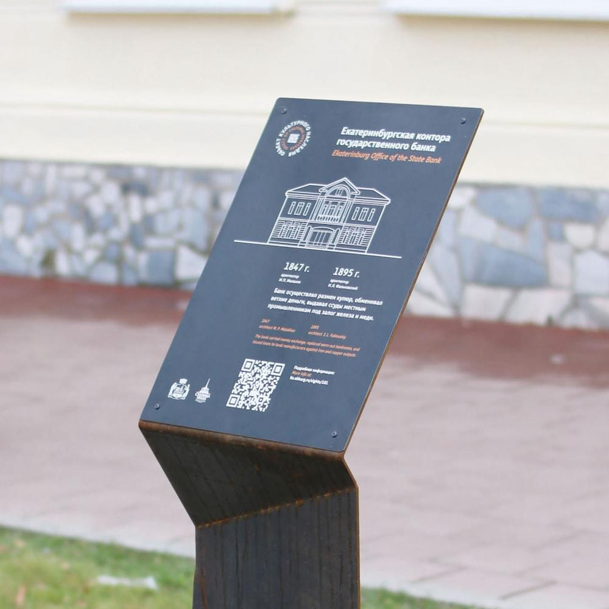
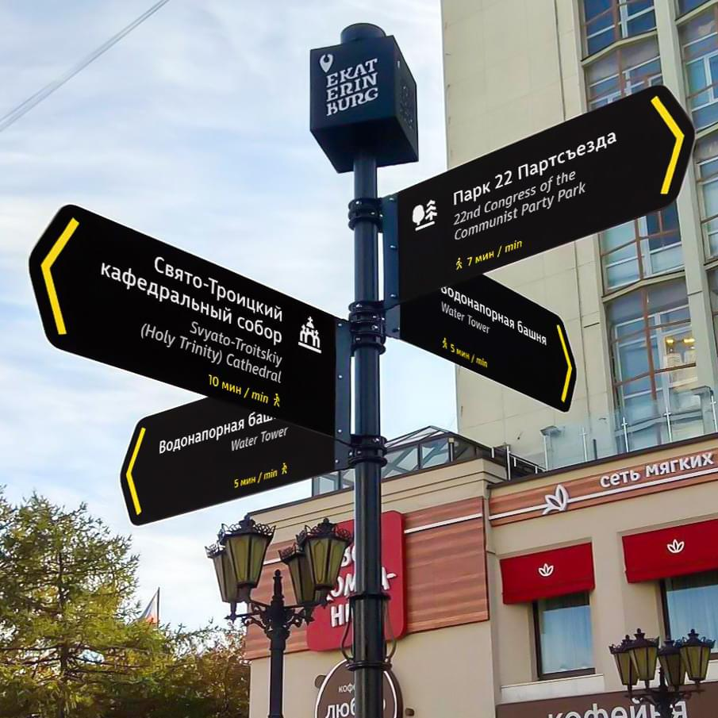

Шрифт «Исеть»
В 2017 году для Екатеринбурга был разработан фирменный шрифт
Идея
В США и Европе развивать шрифты для городов начали достаточно давно, там уже сформировались технические особенности таких шрифтов. Однако, есть языковые нюансы. Например, в немецком языке очень длинные слова, а в чешском — большое количество диактрик. Некоторые страны должны еще и писать текст на двух языках (например, Россия). Изучив опыт других стран и специфику использования шрифта в городской среде, началась разработка шрифтовой гарнитуры Екатеринбурга.
Мы определили характер шрифта, количество начертаний, а также состав основных и дополнительных знаков, чтобы шрифт подходил для любых носителей: адресных табличек, навигации, общественного транспорта и т. д. В других городах для этих целей используются несколько шрифтов, нам же хотелось сохранить единообразие во всем.


Принципы
Были сформулированы принципы проектирования шрифта. Во-первых, это должен быть открытый и современный гротеск с дружелюбными и узнаваемыми формами знаков. Во-вторых, нужен и базовый состав кириллицы и латиницы, и дополнительные знаки: стрелки, табличные и минускульные цифры.
Результат
В итоге получился открытый и компактный гуманистический гротеск, который обладает ясными узнаваемыми формами с высокой степенью различимости.

Начертания
Для первой версии шрифта были разработаны основные начертания: стандартное для основного текста, жирное для акцентов и курсивное для английского языка.

Во второй версии гарнитура расширилась до пяти начертаний. Кроме стандартного, жирного и курсивного были добавлены тонкое и среднее начертания. Благодаря этому шрифт стал более гибким и удобным в использовании.

В каждом начертании есть четыре вида цифр и множество альтернативных версий знаков.
 

Удобочитаемость
Характерные детали букв помогают быстро и безошибочно считывать текст. Отсутствие засечек, открытость знаков, баланс между толщиной штрихов и высокие строчные знаки — все это обеспечивает отличную удобочитаемость.

Удобство в работе
Крупные строчные знаки и укороченные выносные элементы помогают сэкономить место по вертикали, а одинаковая ширина кегельной площадки стандартного и жирного начертаний помогает не тратить время на переверстку текста.
 
В жизни
«Исеть» уже захватила весь город. Она повсюду: на остановках, табличках, указателях и навигации.

 
В ролях
Поддержите «Дизайн-код Екатеринбурга» ✨🌟💫
Уже лет мы работаем только на личной инициативе — развиваем Екатеринбург сами и делаем это на уровне мировых столиц. Чтобы в нашем городе было ещё больше хорошего дизайна, нам нужна ваша помощь — поддержите нас разовым или ежемесячным донатом. Деньги пойдут на новые проекты и развитие существующих.
Спасибо, что следите, как мы развиваем родной город. Вы — золото 🫶
Подписывайтесь, чтобы не пропустить новые проекты